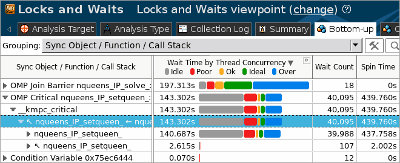
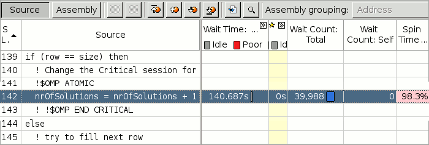
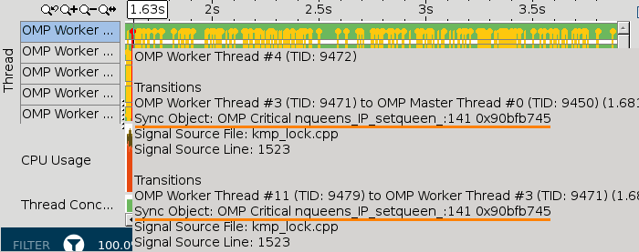

When the sample application exits, the
Intel® VTune™ Amplifier
finalizes the results and opens the Locks and Waits viewpoint that is
configured to display synchronization objects sorted by Wait time. To interpret
the data on the sample code performance, do the following:
When the sample application exits, the
Intel® VTune™ Amplifier
finalizes the results and opens the Locks and Waits viewpoint that is
configured to display synchronization objects sorted by Wait time. To interpret
the data on the sample code performance, do the following:
Identify Locks
Click the Bottom-up tab to open the Bottom-up pane.

The table below explains the type of data provided in the Bottom-up pane:
|
Synchronization objects that control threads in the application. The hash (unique number) appended to some names of the objects identify the stack creating this synchronization object. |
|
The
utilization of the processor time when a given thread waited for some event to
occur. By default, the synchronization objects are sorted by
Poor
processor utilization type. Bars showing OK or Ideal utilization (orange and
green) are utilizing the processors well. You should focus your optimization
efforts on functions with the longest poor CPU utilization (red
This is the Data of Interest column for the Locks and Waits analysis results that is used for different types of calculations, for example: call stack contribution, percentage value on the filter toolbar. |
|
Number of times the corresponding system wait API was called. For a lock, it is the number of times the lock was contended and caused a wait. Usually you are recommended to focus your tuning efforts on the waits with both high Wait Time and Wait Count values, especially if they have poor utilization. |
|
Wait time, during which the CPU is busy. This often occurs when a synchronization API causes the CPU to poll while the software thread is waiting. Some Spin time may be preferable to the alternative of the increased thread context switches. However, too much Spin time can reflect lost opportunity for productive work. |
 bars if the bar format is
selected). Next, search for the longest over-utilized time (blue
bars if the bar format is
selected). Next, search for the longest over-utilized time (blue
In the nqueens_parallel sample code, there are two critical wait objects, OMP Critical nqueens_IP_setqueen and OMP Join Barrier, that caused redundant synchronization and took the longest Wait time and highest Wait count. The bar indicators in the Wait Time column indicate that most of the time for these objects processor cores were underutilized.
Analyze Source Code
Explore the source of the critical synchronization objects that caused significant Wait time and poor processor utilization. Double-click the nqueens_IP_setqueen object to analyze the source of the setqueen wait function. Click the button on the Source pane toolbar to go to the biggest hotspot code line in the function. VTune Amplifier highlights line 142 protected by the OpenMP* critical section.

The setqueen function was waiting for 140.687 seconds while this code line was executing. During this time, this operation was contended 39,988 times.
Hover over any transition line in the Timeline pane below to explore the infotip and make sure that all the transitions are caused by the OMP Critical nqueens_IP_setqueen critical section.

The OMP Critical nqueens_IP_setqueen section is the place where the application is serializing. Each thread has to wait for the critical section to be available before it can proceed. Only one thread can be in the critical section at a time.
You need to optimize the code to make it more concurrent. Click the Source Editor button on the Source window toolbar to open the code editor and optimize the code.